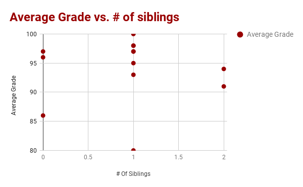

Data Project
How does your number of siblings affect your performance in school?
For our Data Project, my friend and I researched the relationship between a student's number of siblings and their average grade in school. The main target audiences that our project would affect were both students with siblings and their parents. We wanted to see if it would be best for parents to seperate their children while they are doing homework, to keep them together, or to stay indifferent. A data-driven prediction could solve this problem, giving students advice for being more productive during schoolwork. To find this data, we took a survey. It asked for the student's average grade and their number of siblings, and had an optional question asking how the student thinks their sibling(s) affect their concentration in school. We got some mixed results:

Data Analysis
In general, the data that we collected from our survey was automatically made clean. It is recieved directly from survey takers and put into sections for individual responses. All we had to do to get the "big picture" for our data was to take these individual responses, and put each respondent's answers into a spreadsheet. With this data, we created the graph shown above.
To make our data-driven decision, we decided to analyze the graph to see whether there was a trend in the graph or not. As you can probably tell from our graph, there was no distinct trendline. Even when the trendline for the graph was calculated, it was almost perfectly flat. We also wanted to use the responses to the short-answer question to influence our decisions, but these varied greatly as well.
It would also have been reasonable to automate this decision with an algorithm. We could simply have an algorithm take the respondent's average grade and number of siblings, and put that data into a graph by using a math equation. It could then use another algorithm to analyze the slope of the trend line and come to a conclusion based on it being positive, negative, or neutral. However, a computer would not have the ability to analyze the responses to the short-answer questionand the algorithm would take lots of effort to program. Despite this, a computer would be much more efficient and accurate than humans, and would take away the work of needing to do all of the analysis manually.
Conclusion
With this data, we determined that a student's number of siblings has no direct effect on their preformance in school. While some students say that their siblings are incredibly bothersome while they are doing homework, some students say that their siblings do not bother them at all. There are many smaller factors that are in play, such as the age of the siblings and, in simple words, the amount of aggrivation that they cause.